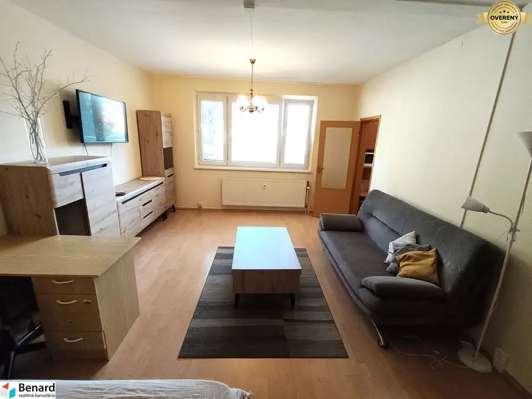
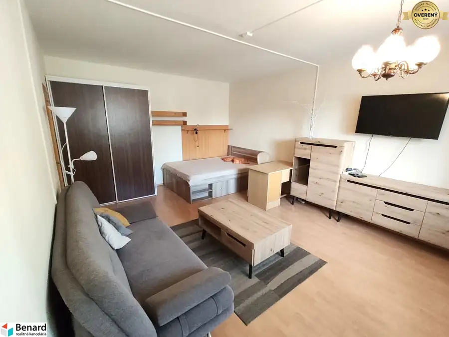
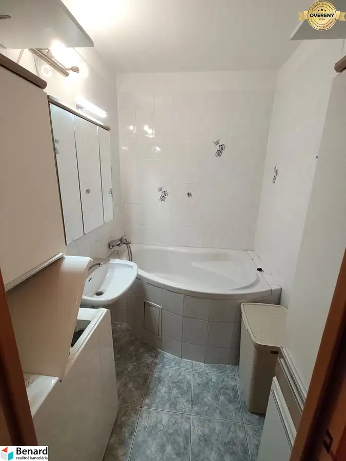
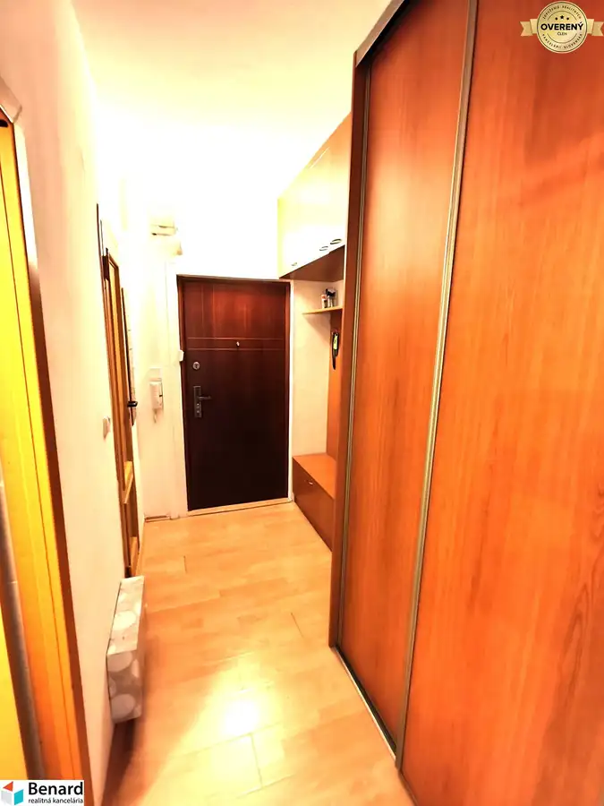

Predaj · Byt
REZERVOVANÉ! 1 IZBOVÝ BYT NA PREDAJ, 40 m2, PREŠOV- KOTRÁDOVA UL.
Prešov
133 000 €3 325 € za m²





- Dispozícia1-izbový
- Plocha40 m²
- Poschodie2. z 10
- Stavpo rekonštrukcii
- Vlastníctvoosobné
O nehnuteľnosti
Základné údaje bytu:
- osobné vlastníctvo, 2.poschodie, výťah
- možnosť hypotekárneho úveru,
- má 40 m2, bez balkóna,
- vstupná chodba, kuchyňa, izba, kúpeľňa a samostatné WC,
- byt je zrekonštruovaný(staršia reko),
- pivnica cca 1,5 m2,
- byt sa predáva aj so zariadením a elektrospotrebičmi,
Bytový dom:
- Prešov, ul. Kotrádova,
- panelová konštrukcia, zateplená,
Byt je k dispozícii po dohode.
Ak máte záujem o obhliadku, prípadne potrebujete viac informácii, nájdete nás v realitnom centre na Slovenskej 8 v Prešove, alebo na tel.č. .
Parametre
- Úžitková plocha
- 40 m²
- Poschodie
- 2/vyššie poschodie
- Počet poschodí
- 10
- Počet izieb
- 1
- Vlastníctvo
- osobné
- Stav
- po rekonštrukcii
- Status
- rezervované
- Internet
- optika
- Kúpeľňa
- vaňa
- Vykurovanie
- spoločné
- Balkón
- nie
- Pivnica
- áno
- Výťah
- áno
- Parkovanie
- vonkajšie
- Postavené z
- panel
- Zariadenie
- zariadený
- Zateplený objekt
- áno
- Káblová televízia
- áno
- Energetický certifikát
- nie
- Okná
- plastové
- Orientácia
- juhovýchodná
- Dátum zverejnenia
- 2026-09-07
Kde to je
Ďalšie ponuky
Celá ponuka